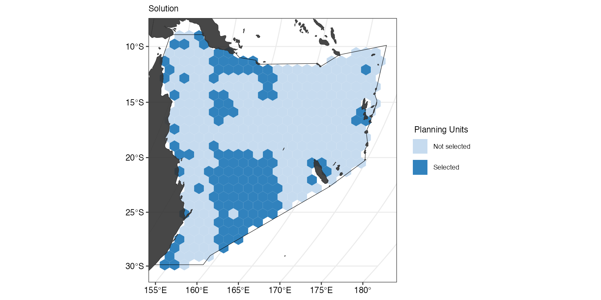
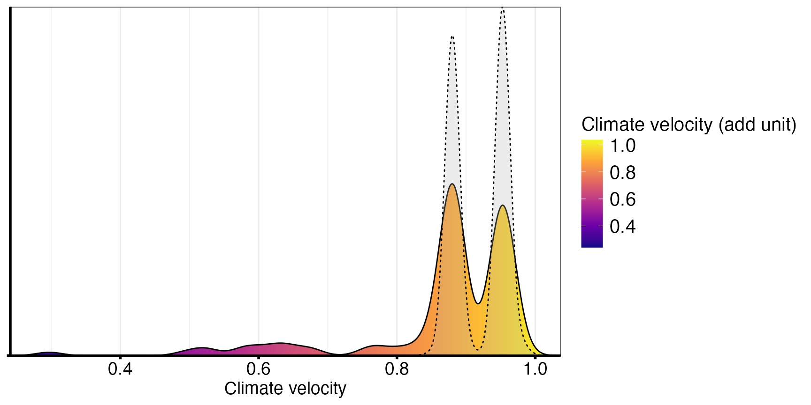
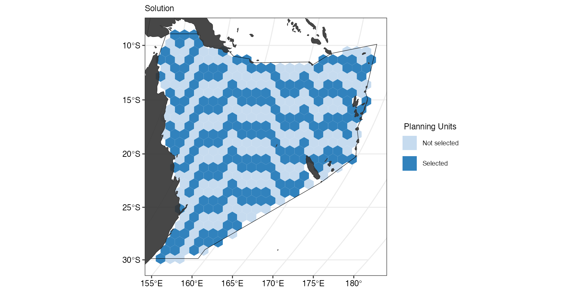

Overview
This code has been written to simplify the process for running a prioritizr analysis on a given region. It is still a work in progress so feel free to submit pull requests with new features and code improvements.
Set user parameters
Region <- "Coral Sea" # "Australia"
Type <- "Oceans" # "EEZ"
cCRS <- "ESRI:54009" # MollweideSet the diameter of the planning units. This will be in the same units as the CRS (usually metres or degrees).
PU_size <- 107460 # mWe can also use a customised ggplot theme that can be
passed as a list to splnr_gg_add() and that can then be
used for all plots. For example:
splnr_theme <- list(
ggplot2::theme_bw(),
ggplot2::theme(
legend.position = "right",
legend.direction = "vertical",
text = ggplot2::element_text(size = 9, colour = "black"),
axis.text = ggplot2::element_text(size = 9, colour = "black"),
plot.title = ggplot2::element_text(size = 9),
axis.title = ggplot2::element_blank()
)
)Analysis Region
Start your analysis by defining your region and setting up the planning units.
Get the boundary for your chosen region.
Bndry <- splnr_get_boundary(Limits = Region, Type = Type, cCRS = cCRS)
#> Reading layer `ne_10m_geography_marine_polys' from data source
#> `/private/var/folders/_r/mcmw_qtn0m7cd23cbdqfszl40000gp/T/RtmpQilTyY/ne_10m_geography_marine_polys.shp'
#> using driver `ESRI Shapefile'
#> Simple feature collection with 306 features and 37 fields
#> Geometry type: MULTIPOLYGON
#> Dimension: XY
#> Bounding box: xmin: -180 ymin: -85.19206 xmax: 179.9999 ymax: 90
#> Geodetic CRS: WGS 84
landmass <- rnaturalearth::ne_countries(scale = "medium", returnclass = "sf") %>%
sf::st_transform(cCRS)Create Planning Units
PUs <- spatialgridr::get_grid(boundary = Bndry,
crs = cCRS,
output = "sf_hex",
resolution = PU_size)Get the features
For our example, we will use a small subset of charismatic megafauna species of the Coral Sea to inform the conservation plan. We filtered the Aquamaps (Aquamaps.org) species distribution models for our study area for the following species:
Dict <- tibble::tribble(
~nameCommon, ~nameVariable, ~category,
"Green sea turtle", "Chelonia_mydas", "Reptiles",
"Loggerhead sea turtle", "Caretta_caretta", "Reptiles",
"Hawksbill sea turtle", "Eretmochelys_imbricata", "Reptiles",
"Olive ridley sea turtle", "Lepidochelys_olivacea", "Reptiles",
"Saltwater crocodile", "Crocodylus_porosus", "Reptiles",
"Humpback whale", "Megaptera_novaeangliae", "Mammals",
"Common Minke whale", "Balaenoptera_acutorostrata", "Mammals",
"Dugong", "Dugong_dugon", "Mammals",
"Grey nurse shark", "Carcharias_taurus", "Sharks and rays",
"Tiger shark", "Galeocerdo_cuvier", "Sharks and rays",
"Great hammerhead shark", "Sphyrna_mokarran",
"Sharks and rays",
"Giant oceanic manta ray", "Mobula_birostris", "Sharks and rays",
"Reef manta ray", "Mobula_alfredi", "Sharks and rays",
"Whitetip reef shark", "Triaenodon_obesus", "Sharks and rays",
"Red-footed booby", "Sula_sula", "Birds"
)These species were not chosen based on their importance for this region and only represent an example for visualization purposes.
Note: The structure of the tribbleabove
is required for some of the downstream plotting. Common denotes
the common name of a species, Scientific the scientific name in
the format used by Aquamaps, Category is the category that a
species belongs to and Class represents the importance of the
species for the conservation plan.
Convert the probabilities to binary data
datEx_species_bin <- spDataFiltered %>%
dplyr::as_tibble() %>%
dplyr::mutate(dplyr::across(
-dplyr::any_of(c("cellID", "geometry")), # Don't apply to geometry/cellID
~ dplyr::case_when(
. >= 0.5 ~ 1,
. < 0.5 ~ 0,
is.na(.data) ~ 0
)
)) %>%
sf::st_as_sf()
col_name <- spDataFiltered %>%
sf::st_drop_geometry() %>%
dplyr::select(-"cellID") %>%
colnames()Climate-smart spatial planning
So far, all steps were exactly the same as in a spatial plan that does not include climate change. To make the spatial plan climate smart, we need climate metrics.
We will use climate velocity data obtained from x, y and z models
using SSP5-8.5. For downstream analysis, we rename the column of
interest (here: the velocity data) metric.
The climate velocity data can be visualized using the
splnr_plot_climData() function.
(ggclim <- splnr_plot_climData(metric_df, "metric") +
splnr_gg_add(
Bndry = Bndry, overlay = landmass,
cropOverlay = PUs, ggtheme = splnr_theme
))In our case, there were few areas with low climate velocity, which
are the areas we define as climate refugia in our example. Usually, we
would combine several metrics (e.g. exposure, velocity etc.) of multiple
SSP scenarios to get more robust climate refugia. For our example, we
randomly set areas with very high velocity to a value between
0.85-1 to visualize the output (CHANGE THIS LATER TO BETTER
DATA).
set.seed(5)
metric_df <- CoralSeaVelocity %>%
dplyr::rename(metric = voccMag_transformed) %>%
dplyr::mutate(
metricOG = metric,
metric = ifelse(metric > 0.99, runif(., 0.85, 1.0), metric)
)
(ggclim <- splnr_plot_climData(metric_df, "metric") +
splnr_gg_add(
Bndry = Bndry, overlay = landmass,
cropOverlay = PUs, ggtheme = splnr_theme
))We then use the climate priority area approach
splnr_climate_priorityAreaApproach() detailed in Buenafe et al (2023) to
determine climate refugia. Briefly, this approach selects a percentile
(in our case 5%) of the suitable habitat of each feature that is
considered the most climate-smart. It also requires a
direction input indicating at which side of the metric
range the more climate-smart areas can be found. In our case, lower
climate velocity denotes more climate-smart
(direction = -1), but in other cases a higher value might
represent the more climate-smart planning units
(direction = 1).
Using this approach also requires an adaptation of the targets, since
5% of the suitable habitat of each species is already protected in the
climate-smart areas. We can decide how much of the 5% of the most
climate-smart areas is supposed to be included in the spatial plan
(here: refugiaTarget = 1 to protect 100% of the 5% most
climate-smart areas).
target <- datEx_species_bin %>%
sf::st_drop_geometry() %>%
dplyr::select(-"cellID") %>%
colnames() %>%
data.frame() %>%
setNames(c("feature")) %>%
dplyr::mutate(target = 0.3)
CPA_Approach <- splnr_climate_priorityAreaApproach(
featuresDF = datEx_species_bin,
metricDF = metric_df, targetsDF = target, direction = -1, refugiaTarget = 1
)
out_sf <- CPA_Approach$Features %>%
dplyr::left_join(
datEx_species_bin %>%
sf::st_drop_geometry() %>%
dplyr::select(
"cellID",
tidyselect::starts_with("Cost_")
),
by = "cellID"
) %>%
dplyr::left_join(metric_df %>%
sf::st_drop_geometry(), by = "cellID")
targets <- CPA_Approach$TargetsWe now add other information required to perform the spatial planning, such as the cost, and extract the names of all used features.
out_sf$Cost_None <- rep(1, 397)
usedFeatures <- out_sf %>%
sf::st_drop_geometry() %>%
dplyr::select(
-tidyselect::starts_with("Cost_"),
-"cellID",
-tidyselect::starts_with("metric")
) %>%
names()Run the climate-smart spatial planning
The prioritizrsteps when including climate change are
the same as when running a non-climate-smart spatial prioritization.
p1 <- prioritizr::problem(out_sf, usedFeatures, "Cost_None") %>%
prioritizr::add_min_set_objective() %>%
prioritizr::add_relative_targets(targets$target) %>%
prioritizr::add_binary_decisions() %>%
prioritizr::add_default_solver(verbose = FALSE)
dat_solnClim <- prioritizr::solve.ConservationProblem(p1)We can look at the resulting plan using
splnr_plot_solution().
(ggSoln <- splnr_plot_solution(dat_solnClim) +
splnr_gg_add(
Bndry = Bndry, overlay = landmass,
cropOverlay = PUs, ggtheme = splnr_theme
))
However, we are also interested how climate-smart the selected planning units in the solution actually are. For this, we can use a kernel density plot
(ggClimDens <- splnr_plot_climKernelDensity(
soln = list(dat_solnClim),
names = c("Input 1"), type = "Normal",
legendTitle = "Climate velocity (add unit)",
xAxisLab = "Climate velocity"
))
Alternative Approaches
Percentile Approach
target <- datEx_species_bin %>%
sf::st_drop_geometry() %>%
dplyr::select(-"cellID") %>%
colnames() %>%
data.frame() %>%
setNames(c("feature")) %>%
dplyr::mutate(target = 30)
Percentile_Approach <- splnr_climate_percentileApproach(
featuresDF = datEx_species_bin,
metricDF = metric_df, targetsDF = target, direction = -1, percentile = 35
)
#> [1] "Lower values mean more climate-smart areas."
out_sf <- Percentile_Approach$Features %>%
dplyr::left_join(
datEx_species_bin %>%
sf::st_drop_geometry() %>%
dplyr::select(
"cellID",
tidyselect::starts_with("Cost_")
),
by = "cellID"
) %>%
dplyr::left_join(metric_df %>%
sf::st_drop_geometry(), by = "cellID")
targets <- Percentile_Approach$TargetsWe now add other information required to perform the spatial planning, such as the cost, and extract the names of all used features to then run a prioritisation.
out_sf$Cost_None <- rep(1, 397)
usedFeatures <- out_sf %>%
sf::st_drop_geometry() %>%
dplyr::select(
-tidyselect::starts_with("Cost_"),
-"cellID",
-tidyselect::starts_with("metric")
) %>%
names()
p2 <- prioritizr::problem(out_sf, usedFeatures, "Cost_None") %>%
prioritizr::add_min_set_objective() %>%
prioritizr::add_relative_targets(targets$target) %>%
prioritizr::add_binary_decisions() %>%
prioritizr::add_default_solver(verbose = FALSE)
dat_solnClimPercentile <- prioritizr::solve.ConservationProblem(p2,
force = TRUE
)We can look at the resulting plan using
splnr_plot_solution().
(ggSoln <- splnr_plot_solution(dat_solnClimPercentile) +
splnr_gg_add(
Bndry = Bndry, overlay = landmass,
cropOverlay = PUs, ggtheme = splnr_theme
))
However, we are also interested how climate-smart the selected planning units in the solution actually are. For this, we can use a kernel density plot
(ggClimDens <- splnr_plot_climKernelDensity(
soln = list(dat_solnClimPercentile),
names = c("Input 1"), type = "Normal",
legendTitle = "Climate velocity (add unit)",
xAxisLab = "Climate velocity"
))Feature Approach
target <- datEx_species_bin %>%
sf::st_drop_geometry() %>%
dplyr::select(-"cellID") %>%
colnames() %>%
data.frame() %>%
setNames(c("feature")) %>%
dplyr::mutate(target = 0.3)
Feature_Approach <- splnr_climate_featureApproach(
featuresDF = datEx_species_bin,
metricDF = metric_df, targetsDF = target, direction = 1
)
#> [1] "Higher values mean more climate-smart areas."
out_sf <- Feature_Approach$Features %>%
dplyr::left_join(
datEx_species_bin %>%
sf::st_drop_geometry() %>%
dplyr::select(
"cellID",
tidyselect::starts_with("Cost_")
),
by = "cellID"
) %>%
dplyr::left_join(metric_df %>%
sf::st_drop_geometry(), by = "cellID")
targets <- Feature_Approach$TargetsWe now add other information required to perform the spatial planning, such as the cost, and extract the names of all used features to then run a prioritisation.
out_sf$Cost_None <- rep(1, 397)
usedFeatures <- out_sf %>%
sf::st_drop_geometry() %>%
dplyr::select(
-tidyselect::starts_with("Cost_"),
-"cellID",
-tidyselect::starts_with("metric")
) %>%
names()
p3 <- prioritizr::problem(out_sf, usedFeatures, "Cost_None") %>%
prioritizr::add_min_set_objective() %>%
prioritizr::add_relative_targets(targets$target) %>%
prioritizr::add_binary_decisions() %>%
prioritizr::add_default_solver(verbose = FALSE)
dat_solnClimFeature <- prioritizr::solve.ConservationProblem(p3)
(ggSoln <- splnr_plot_solution(dat_solnClimFeature) +
splnr_gg_add(
Bndry = Bndry, overlay = landmass,
cropOverlay = PUs, ggtheme = splnr_theme
))However, we are also interested how climate-smart the selected planning units in the solution actually are. For this, we can use a kernel density plot
(ggClimDens <- splnr_plot_climKernelDensity(
soln = list(dat_solnClimFeature),
names = c("Input 1"), type = "Normal",
legendTitle = "Climate velocity (add unit)",
xAxisLab = "Climate velocity"
))